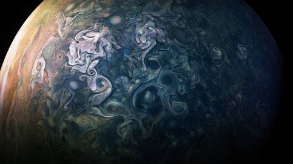
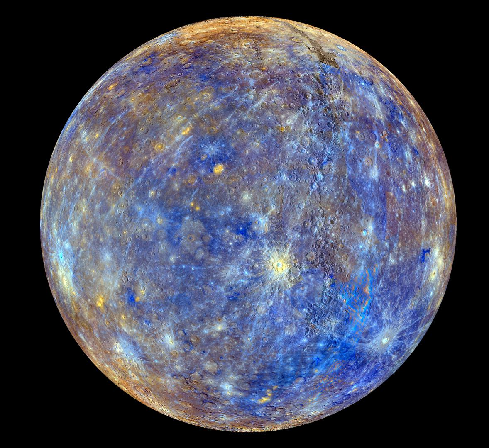

LA LUNA

MARTE

JUPITER

MERCURIO
Se encontro un planeta llamado Proxima b, ubicado en la zona habitable de la
estrella más
cercana a nuestro sistema solar, Próxima Centauri.
Proxima b es una super-Tierra y
orbita su
estrella a una distancia que podría
permitir la existencia de agua líquida en su superficie. Aunque Próxima Centauri
es una
enana roja muy
activa que emite llamaradas estelares, lo que podría hacer que la vida en Proxima
b sea
difícil, los
científicos creen que aún es un candidato prometedor para la colonización humana en el futuro.